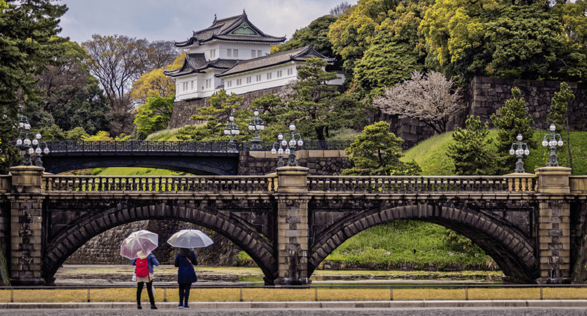

Mount Fuji
{kind=link}
{kind=link}
Located in Fuji-Hakone-Izu National Park, Mount Fuji is a symbol of Japan. The mountain contributes to Japan's physical, cultural, and spiritual geography. Standing at 3,776 meters (12,380 feet). It is an active volcano, sitting on a "triple junction" of tectonic activity. Being the Mount Fuji is the single most popular tourist site in Japan, for both Japanese and foreign tourists. More than 200,000 people climb to the summit every year, mostly during the warmer summer months. "Huts" on the route up the mountain cater to climbers, providing refreshments, basic medical supplies, and room to rest. Many people start climbing Mount Fuji at night, as better to experience sunrise from the summit—Japan, after all, is nicknamed "the Land of the Rising Sun." The sunrise from Mount Fuji has a special name, Goraiko.
The best way to get to the location of Mount Fuji is to book a flight in Manila Airport to Central Japan International Airport. This cost roughly around PHP 4,500 - PHP 13,000 with a an eta of 4 hours and 15 minutes. After that you ride ride a train from Meitetsu Ltd Express, a railway express. to Meitetsunagoya costing roughly around PHP 310 - 360. You then travel to Nagoya and ride another train costing around PHP 2,700-PHP 3,900.
Tokyo Imperial Palace
{kind=link}

Another place to visit in Japan is the Tokyo Imperial Palace. One of Tokyo's most famous landmarks, the Imperial Palace with its beautiful 17th-century parks surrounded by walls and moats, is a must-see when visiting the nation's capital. Don't be put off by the fact that the majority of the palace is closed to the public (it's still in use by the Imperial family), as there is still enough to see simply by strolling the grounds. In addition to the many fine views of the palace from numerous points in the surrounding parkland, visitors are permitted into the East Higashi-Gyoen Garden and other areas that are opened to the public as part of an organized tour. One of the most romantic views is of the famous Nijubashi Bridge, or "double bridge," so named for its watery reflection